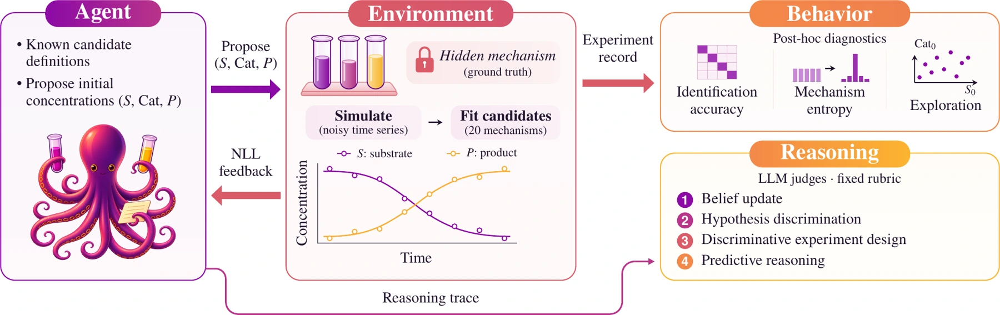

Beyond Accuracy: A Diagnostic Benchmark for Hypothesis-Driven Experiment Planning in LLM Agents
NeurIPS 2026 · Evaluations and Datasets
Diagnosing how agents update beliefs and design experiments, alongside whether they identify the right mechanism.